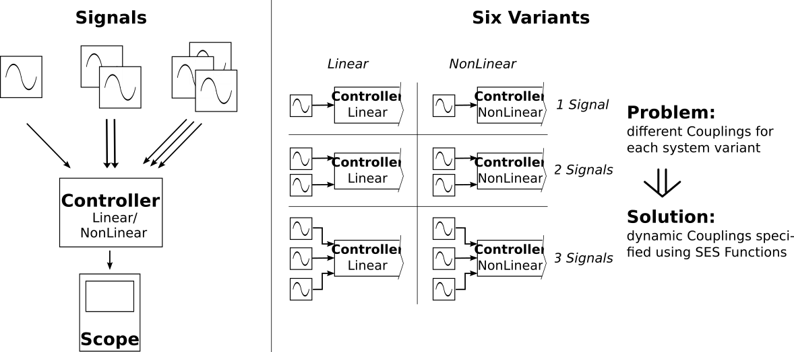
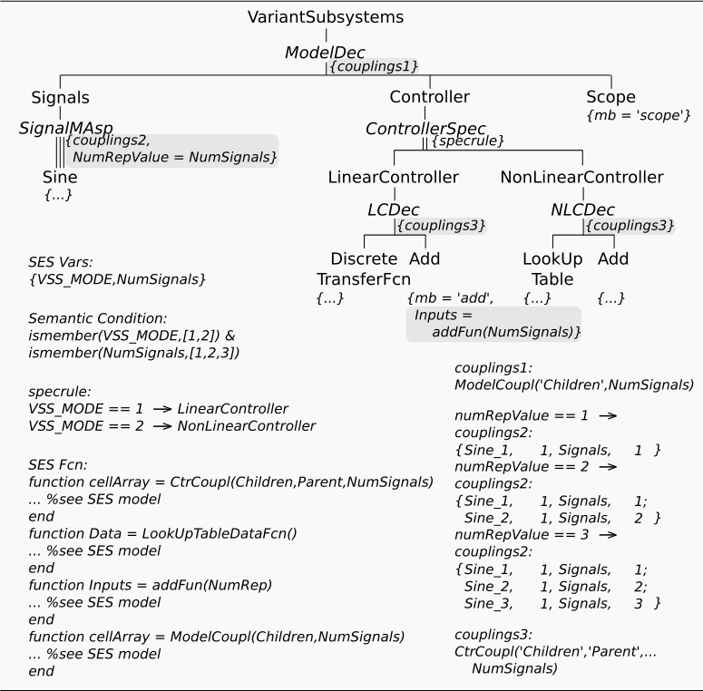

Variant Subsystem (Dynamic Couplings)
Motivation
This example is a straightforward extension of the example A01 "Variant Subsystem (simple)".
It extends the previous one by more variability, which results in a higher number of variants. It uses dynamic coupling relations and shows how they can be specified with SES Functions.
Subsequently, we only describe the extensions, which are highlighted in the SES tree.
Basic enlargement and resulting system variants:

Basic SES:

Description
The example extends the previous one by a varying number of signal generators, that means:
- The number of signal inputs for a controller can vary. Either one, two or three sine wave generators are connected to a specific controller model.
- The internal model structure of the two controllers depends on the number of connected signal generators.
- Notice, that in contrast to the example A01, in this example not always the second sensor input of the controllers is connected with the linear (discrete transfer fcn) or non-linear (look-up table) controller element. In the special case of only one sensor input, this single input should be connected to the linear or non-linear controller element. Of course, in this special case the adder element could be eliminated, but for simplicity we retain it in the model.
Overall, the SES describes now 6 different model variants (2 x 3).
Also here we provide two SES with the example: VarSubSysDynCoupSES_v1.mat (including a Simulink Scope) and VarSubSysDynCoupSES_v2.mat (including a Simulink Out block).
Dynamic Configuration of a MultiAspect (Modifications regarding to node SignalMAsp)
The first thing that has to be changed in the SES compared to the example A01, is
the Number Of Replications property at the MultiAspect node. Previously it was set to the constant value of 3. Now you define an SES Variable NumSignals to control the number of sine wave generators. This variable may have the value 1, 2 or 3, which has to be defined as Semantic Condition with ismember(NumSignals,[1,2,3]).
Moreover, we have to define 3 different coupling specifications, one for each possible case of replication. Therefor, we can define 3 coupling tables, such as in the example SES, or we can define an SES Function, such as following, named c_sg:
function cplg = c_sg(children,parent,num) %create empty data structure for couplings cplg = cell(num,4); %set variable couplings btw children & parent for i = 1:num cplg(i,1:4) = {children{i}, num2str(1),parent, num2str(i)}; end endand activate the "Choose Function to set Coupling" field in the editor with the following SES Function call:
c_sg('Children','Parent',NumSignals)
Dynamic Couplings at Aspects Using SES Functions
Because of the problem enlargement by a varying number of input generators, the number of ports and the couplings are different for the various variants. This problem is solved by using SES Functions for specifying the coupling relations at the Aspect nodes (see nodes ModelDec, LCDec and NLCDec) in the SES, similiar to the above described SES Function for the MultiAspect node and the SES Functions used in example B07. For details regarding to the call and definition of SES Functions open this SES model example in the SES editor and take a look at the tab "Functions". Examplary, we show subsequently the definition of the SES Function CtrCoupl,
function cellArray = CtrCoupl(Children,Parent,NumSignals) switch NumSignals case 1 cellArray = {Parent,'1', Children{1},'1'; Children{1},'1',Children{2},'1'; Children{2},'1',Parent, '1'}; case 2 cellArray = {Parent, '1',Children{2},'1'; Parent, '2',Children{1},'1'; Children{1},'1',Children{2},'2'; Children{2},'1',Parent, '1'}; case 3 cellArray = {Parent, '1',Children{2},'1'; Parent, '2',Children{1},'1'; Children{1},'1',Children{2},'2'; Parent, '3',Children{2},'3'; Children{2},'1',Parent, '1'}; otherwise cellArray = cell(1,4); end endwhich is used in the same manner for specifying the variable coupling relations at node LCDec and NLCDec with the SES Function call
CtrlCoupl('Children','Parent',NumSignals)
Variable Configuration of Entities and Referenced Dynamic Models
Moreover, the varying internal structure of the controllers, caused by the variable number of sensor inputs, requires a variable configuration for the leaf entity Add, which references a dynamic model in the MB by its attribute mb='add'.
That's why, its attribute Inputs is specified using an SES Function call, addFun(NumSignals), to calculate this attribute dynamically depending on the specific number of choosen sensor inputs (signal generators). Subsequently, you see the definition of the SES Function.
function Inputs = addFun(NumRep) switch NumRep case 1 Inputs = '|+'; case 2 Inputs = '|++'; otherwise Inputs = '|+++'; end end
MB, Model Generation and Execution
Analogous to the example A01, this SES defines references to dynamic models in an MB, namely the Simulink library.
For starting the entire model generation and execution process use the MATLAB functions ./startFcn... located in the example's directory.
The associated experiment functions are located in the example's subdirectory private.
Fully Automated Experiment
The basic idea of an Experiment Control (EC) as a part of the Extended SES/MB Architeture is presented.
Possible system variants are automatically generated, executed and evaluated.
The output of each generated system variant is compared with a
pre-defined reference signal. The study starts with the simplest system
structure. If a controler mode (VSS_MODE) overshoots the ref. amplitude,
the mode is blocked (skipping more complicated designs using this mode).
Finally, best system variant is marked in output figure.
For starting this fully automated experiment, execute ExpCtrl_VarSubSysDynCoup_v3().
The associated single experiment function ./private/experiment_v3_SL.m now returns simulation output to the EC and deletes the generated Simulink models after execution.